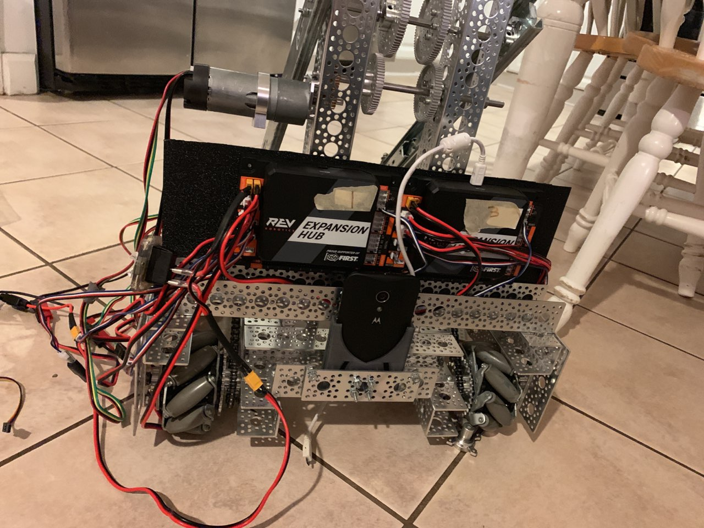
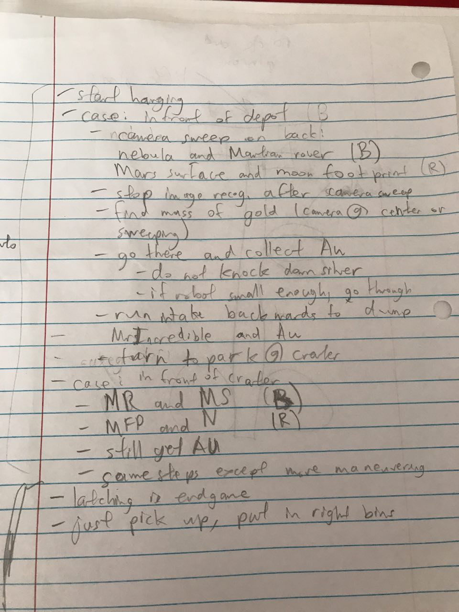
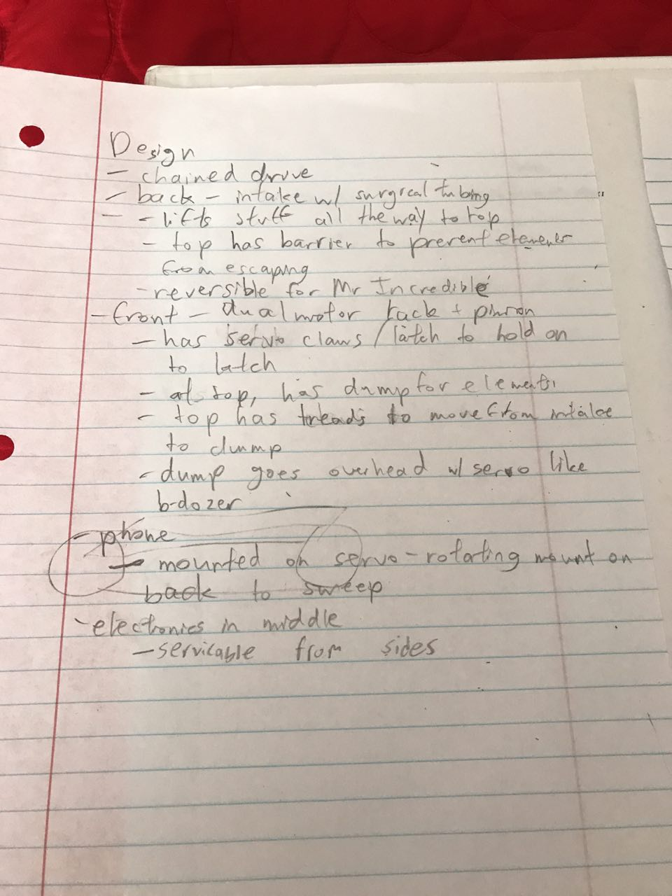
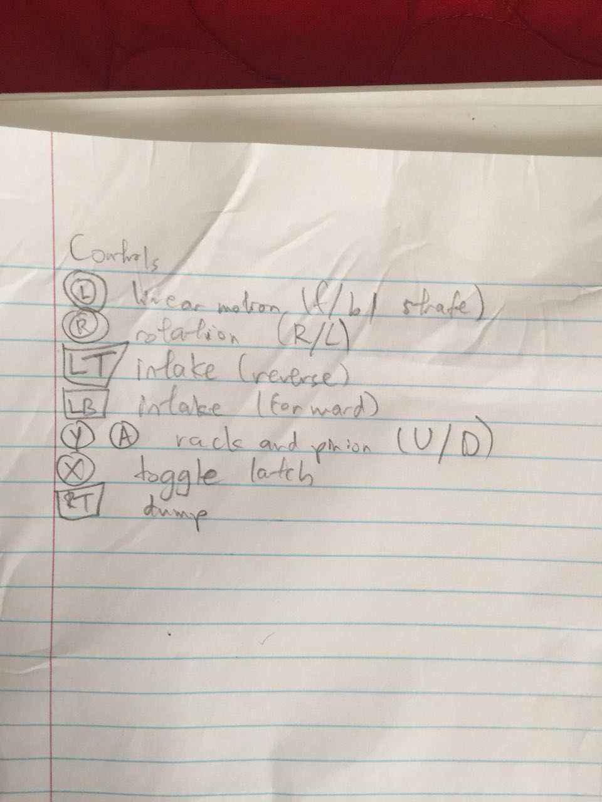

The Mandelbots Blog
Virgin/Chad Screwdrivers and Barbie Gears
The linear actuator kit (https://www.servocity.com/linear-actuator-kit-7-4-stroke-6-0-sec) has arrived at long last. Hence, Nicholas and I went to work building the lift, which was now separate from the dump.
Unfortunately, the kit as-is would not fit onto the robot, since the motor that powered the kit obstructed two of the drive-train motors. Hence, we instead used a Neverest am-3104 motor with a Neverest Sport 256:1 gearbox and attached it to a long axle. This did the trick, but the problem was that the lift would move too slowly with the standard gears (which took 40 seconds for the entire length; we did not take into account speed when getting a gearbox). Hence, we had to experiment with gears for the linear actuator; the hard part was the fact that the actuator gear shaft was different from the standard axle, greatly limiting the gears that we could use. We eventually decided to use the plastic "Barbie gears" in the interim until we find better gears for the lift.
To space the axles correctly, we bootlegged the motor mount using 3 bearings per screw, for a total of 12 (3×4) of them. We also had to zip-tie the axle so that the gears would not unmesh. In the end, the linear actuator (at max power) would move the entire length in about 20 seconds.
Nicholas installed the vertical lift along with a primitive claw to grip the handle on the robot. It works,
except that we need a better claw. He also tested my fix for robotics tele-op rotation direction (i.e. use -rot in place of +rot),
and found that it worked also. I have also found a fix for strafing direction (-x in place of +x), but I have yet to test that.

Written by Thanh-Phuong Tran for 1/5/2019
'Droid Invasion
(Note: The source code for the Mandlebot's Rover Ruckus program is at https://github.com/mandelbots/2k18.)
Setting up the Android program has been anything but intuitive.
Writing the initial teleop code was not too difficult, but a problem I encountered in doing so was that
the Android API level was stuck at level 23 (disallowing default interfaces in Java), which forced me to use
an abstract class MandelbotsOpMode instead of IMandelbotsOpMode (which would have allowed for both linear
and ticking opmodes). Deploying the code, however, has been a completely different story:
- The proper Micro USB cable for flashing the Android phones had gone missing, so I have had to provide my own.
- To make matters worse, it took me quite a while to figure out how to properly flash the APK onto the Androids. It turns out that the FTC Robot Controller app is embedded in the robotics code repository, so we had to target the correct phone (it is the one on the robot). Unfortunately, we thought that the Driver Station phone was the one to flash the APK to, which led to infuritating "Unfortunately, the FTC Driver Station has stopped" errors.
- The USB On-the-Go cable was hiding all the way back in a bin that was supposed to hold the motors.
- Configuring the motor controllers to work was a huge PITA, with both controllers not being detected until we set their addresses to 1 and 3 on the left and right respectively, yielding a number that is not exactly auspicious.
- Naming and configuring the motors themselves required us to cut the zip ties that we had already established, a nuisance but hardly the most tedious part of deployment.
Thankfully, we have gotten the motion fully working, except for the rotation and strafing directions being reversed (which, fortunately, is an easy fix).
Written by Thanh-Phuong Tran for 12/12/2018, 12/19/2018, 12/27/2018, and 1/2/2019
Vikvik The Choo-Choo Train
The new drive train took four grueling meetings to complete. To prevent motor shaking and secure the chain, we fastened each motor in two parts: one below, and one to a bar the side. We also created metal guards to prevent the chains from flying off as they did at Annapolis last year. The chains also had to be pulled taut (accurate to the link) lest they get messed up in operation.
The train also had to be designed around other components as well. A cross bar in the center functions both to ensure stability to the structure and provide a mount for the eventual lift that will hoist the robot up. This lift must be close to the center of mass of the robot to ensure that the robot will not rotate while being lifted. In addition, a back bar was mounted to handle the battery and phone.
Written by Thanh-Phuong Tran and revised by Nicholas Pinto for 12/12/2018, 12/19/2018, 12/27/2018, and 12/28/2018
call(i_see_em);
The entire gang, except for Viktor, was here today. I was working on a rough sketch for the robotics Java program while the rest of the team worked on setting up the test arena. Unfortunately, the USB cable for flashing the APK to the Android phones was not working, so we were not able to test preliminary features yet.
For using the four image markers, we are using Vuforia to determine the robot location in autonomous. For detecting which mineral to displace, I at first planned to use OpenCV, though I may switch to Tensorflow since I found examples in the FTC app for it.
Written by Thanh-Phuong Tran for 12/5/2018
Before the Chains of Thunder
Today, we finished up the robot's chassis and put all the wheels and their sprockets in place. What's left is to chain them together and secure that chain in place. After we finished building, we looked into using a worm-gear based rack and pinion to lift the robot. We figured we would use this design to avoid the rotation found when a normal gear is met with the downwards force placed on it by the robot's weight.
Written by Nicholas Pinto for 11/21/2018
Speakeasies
This week, there were only two of us. Viktor and I worked on the back of the chassis. We attached mechanum wheels to sprockets and mounted corresponding motors. We lacked proper hubs to mount sprockets to the motors so we ended up performing this season’s first “bootleg.” Viktor used a proper gear as a means of attaching a motor hub to a sprocket. That hub could then be attached to the motor.
Written by Nicholas Pinto for 10/24/2018
Indian Phone Scammer
We finished the long task of hanging Benito's parts in the Milan town square parts bin.
That was not the most interesting part of this meeting, however.
An Indian phone scammer called Nicholas that meeting. We knew that the call was from a scammer, but Nicholas picked up the phone anyway just to troll the poor scammer. Needless to say, the room became a circus afterwards.
Written by Thanh-Phuong Tran for 10/17/2018
The Gang
Our robotics team expanded from a whopping 3 members to 6 today. Max, Nick Gutierrez, and Viktor went to this meeting in addition to the initial members.
Nicholas and I made Max and Nick G. do the work of finishing the disassembling of Benito, with Viktor as their overseer. The two of us also had to explain to the new members the design and plan documents that we had crafted in their absence.
Unfortunately, none of the members barring Nicholas and I could stay for long. After the others left, we started making some progress with modeling the new robot's chain drive.
Written by Thanh-Phuong Tran for 10/10/2018
The Incredibles' Revenge
The last meeting went unlike most of the other meetings for robotics; i.e. it went smoothly. Due to the fact that Phuong and I the only members present, we were able to plan and design far more efficiently than we would with other teammates. I decided to hold this meeting on this date despite the fact that many members are busy with internships and other extracurriculars because the team's bane last year was that we had to push all of the work to days before the competition. I have decided, furthermore, that meetings will henceforth be held weekly regardless of any other conflicting schedules.
We decided that the main theme of this year's team would be to “avenge” the shortcomings of last year's team. We will implement a functional chain-based drive train this year, whereas we failed to do so last year. We will accurately implement computer vision, whereas last year, our robot was a Blind Bandit without the combat potential. We will methodically plan out each case of randomized elements for the autonomous period while still refining our game plan to cover as many cases as possible.
Thus, we decided on how our robot would be designed. Vertical intake systems, a dual-motor rack and pinion lift, and wheels driven by chained sprockets are the robot's major features. We designed our plan to program the robot around said elements. With everything planned out, we are now able to purchase most of the parts we need initially so as to avoid the issues we had last year where parts ordered too late, in conjunction with the snail's pace at which the IRS processed our documents, caused us to delay our work to three days before the competition.
  Written by Nicholas Pinto and revised by Thanh-Phuong Tran for 10/3/2018
The Robot Rack
The 1st robotics meeting was…well, a ritual of sorts.
We hung the beheaded Incredibles figurine onto a rack in the meeting room, and will leave it there as a sign of pent-up rage from last Robotics season. After that, we could proceed to disassemble the old robot.
Luckily for us, most of the old robot's parts were still in perfectly usable condition, especially the case for holding the Android brain, which was 3D printed last year, before I joined. As we ritually tortured the poor robot, Nicholas unceremoniously gave the dying robot the Italian name Benito (yes, the Italian dictator's name).
Unluckily, however, the tools for disassembling were scattered about in a mess, so we spend more time than we should finding them. We put the tools in a place where we no longer had to spend precious minutes searching for them.
As we ceremonially reflected on various events that transpired last year, we have soon realized that despite my wishes to the contrary, I was right: contrary to the spirit of Eminentia ex minimis, many of our peers, who have once been noble in character, have indeed descended to such a level that I was utterly unable to comprehend.
However, at the same time, I reflected on the few peers for which the opposite happened: they remained steadfastly strong in spirit, even amongst huge pressure to the contrary—in a few cases, at a deep level.
I only hope that Nicholas and I do not fall into very trap that I warned him about.
Written by Thanh-Phuong Tran for 9/26/2018
Redesign of the website
The original website was designed 2 years ago. It was a brutalist one, far out of touch with modern design standards: the font was good ol' Times New Roman, and the drab black-and-white color scheme did not help ease my eyes. Since the original website designer has left the Mandelbots in a deep internal schism, I took it upon myself to remake the website to modern standards.
The first thing that I wanted to get rid of was the old color scheme—I truly cannot stand the sight of it! I replaced it with a more appealing gradient theme which is not only commonly seen in new websites, but also does away with the crudeness of solid colors.
I also replaced the old website's font (Times New Roman) with the sci-fi themed Exo font, which fits the subject matter of the site (robotics) quite well, notwithstanding the fact that Exo is also the name of a K-pop band that keeps playing incessantly.
Finally, to match the design of the website, I redesigned the logo to have a dark theme, complete with the motto “Eminentia ex minimis,” which is Latin for “eminence in the least [things].” In other words, if one is incapable of creating something great out of unfavorable odds, resources, etc., then he has not truly accomplished very much. It is quite fitting not only because we have to work with a robot that can only understand the most basic of instructions, but also because in real life, we are indeed often faced with unfavorable resources and constraints, and we witness people who, despite almost everything driving them down to despondency, still manage to push on and rise to excellence—many of whom I personally know.
Written by Thanh-Phuong Tran for 9/19/2018